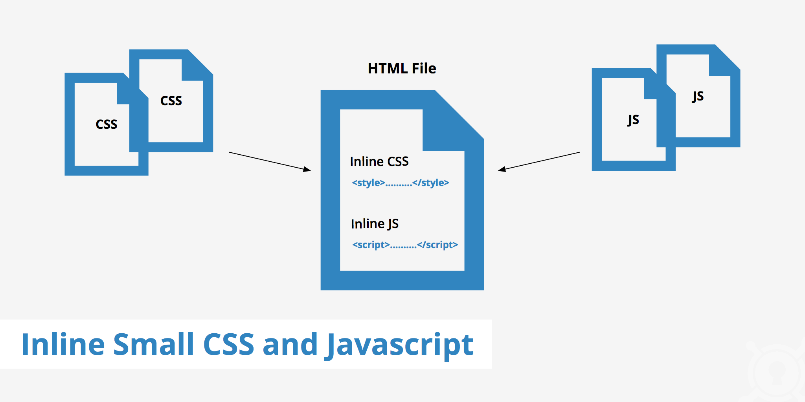

- HTML
- CSS
- Java Script
Java Script란 무엇인가?
A script is program code that doesn’t need pre-processing (e.g. compiling) before being run. In the context of a Web browser, scripting usually refers to program code written in JavaScript that is executed by the browser when a page is downloaded, or in response to an event triggered by the user.
Scripting can make Web pages more dynamic. For example, without reloading a new version of a page it may allow modifications to the content of that page, or allow content to be added to or sent from that page. The former has been called DHTML (Dynamic HTML), and the latter AJAX (Asynchronous JavaScript and XML).
Beyond this, scripts increasingly allow developers to create a bridge between the browser and the platform it is running on, making it possible, for example, to create Web pages that incorporate information from the user’s environment, such as current location, address book details, etc.
This additional interactivity makes Web pages behave like a traditional software application. These Web pages are often called Web applications and can be made available either directly in the browser as a Web page, or can be packaged and distributed as Widgets.
